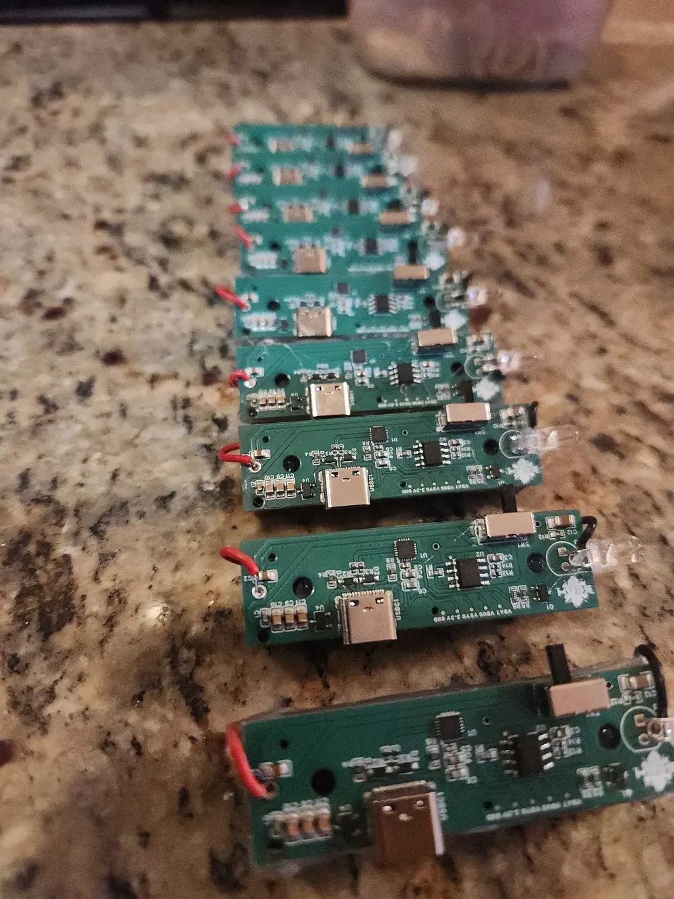

← All projects
PROJECT / ELECTRONICS / PCB · 2026
Offinator.
A compact infrared controller. This one went beyond CAD: I had the boards fabricated and soldered the hardware myself.
StageFabricated & assembled
My partDesign, layout, assembly

PHYSICAL OFFINATOR BOARDS / ASSEMBLED HARDWAREFABRICATED & ASSEMBLED
The project
What went into it.
I designed the Offinator around a microcontroller-controlled infrared output and a compact battery-powered board. The design brings USB-C, charging, regulation, programming and IR drive circuitry together on a narrow PCB. I prepared the board for fabrication and assembled the hardware by soldering the components.
- Designed the electrical schematic and PCB layout in EasyEDA Pro.
- Used a CH32X035 microcontroller, USB-C interface, battery charging circuit and 3.3 V regulation.
- Designed a MOSFET-switched infrared LED output stage.
- Worked within a narrow enclosure-friendly board outline with physical connector and switch locations.
- Ordered fabricated boards and soldered the physical assemblies.
The photographs show actual assembled boards. Design images may come from different revisions; this is not a claim of compliance certification or production qualification.
Design evidence.
Click an image to view it larger.